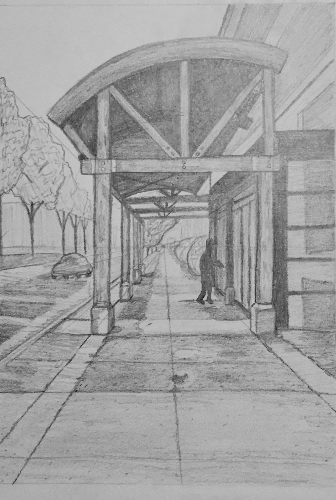
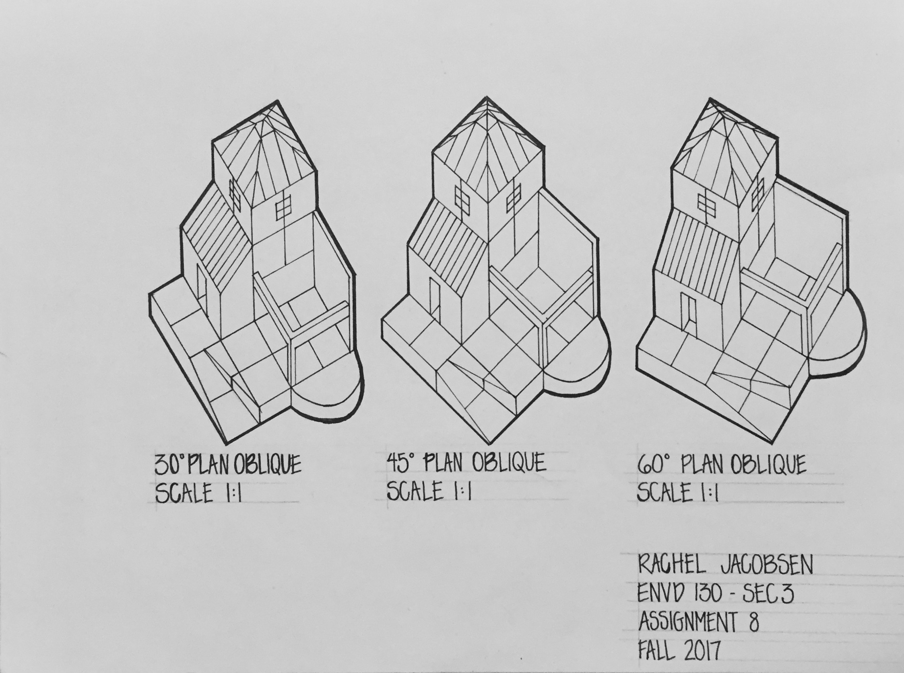
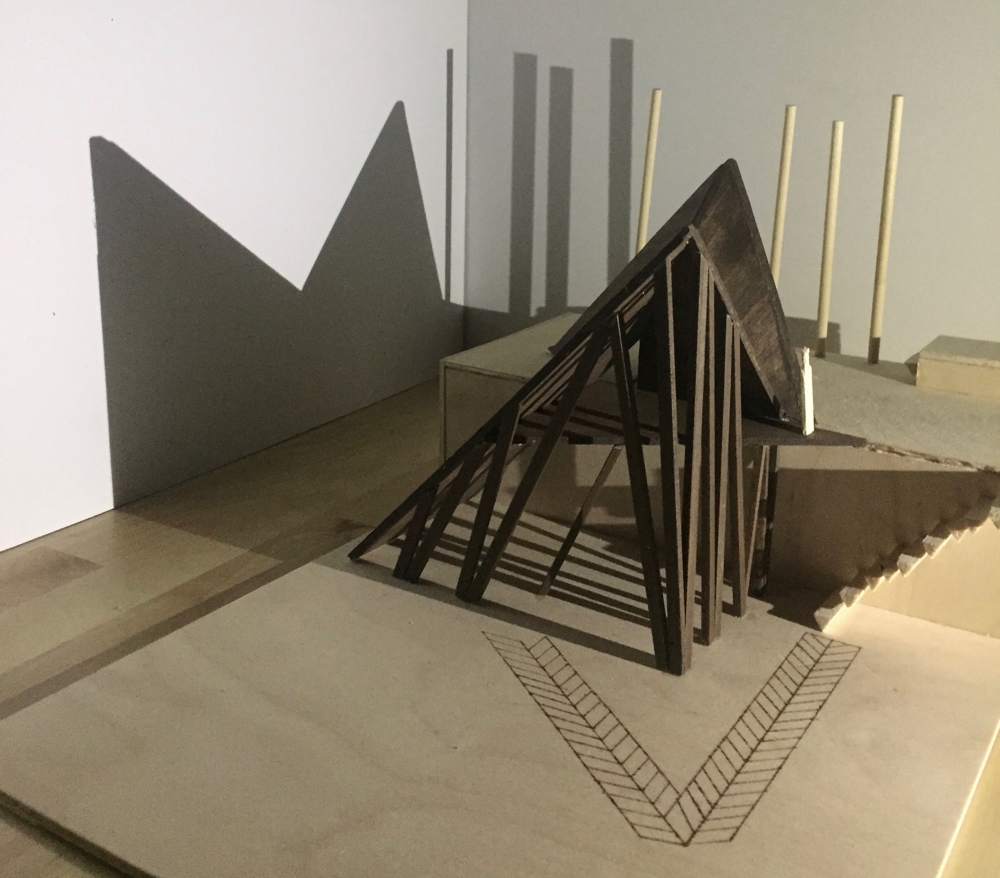
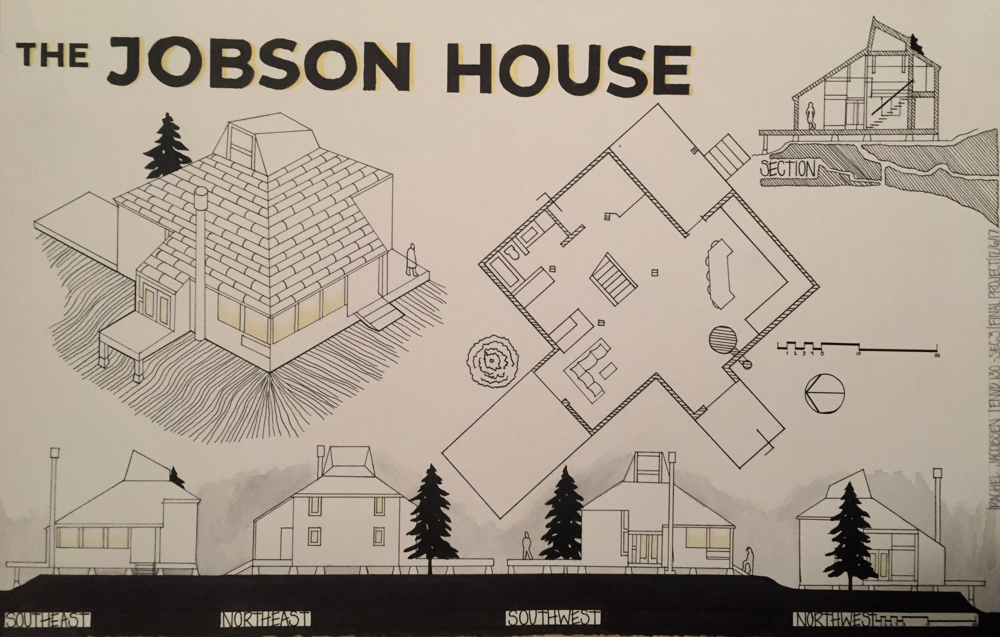

- 
This image shows a one-point perspective sketch of the front
of the Plains Art Museum. It exemplifies atmospheric perspective, texture,
and different values.
-

On this project, the assignment
was to create a landscape out of book pages,
create a measuring device to measure the contours,
and create a new contour model made of wood. This
was my group's finished product!
- 
This image is an example of my ability to draw
technical drawings. For example, these are obliqute isometrics
at varying angles that can be used for actual measurements.
- 
This is a model that I made for my first year
final project. The project was all about continual delay
which essentially means that the design was made to confuse
the viewers and users of the building as to create suspense and
visual interest.
- 
This is my final project from the first semester of
architecture school. It shows my ability to create a fluid
presentation layout while displaying neat technical drawings
to a specific scale.